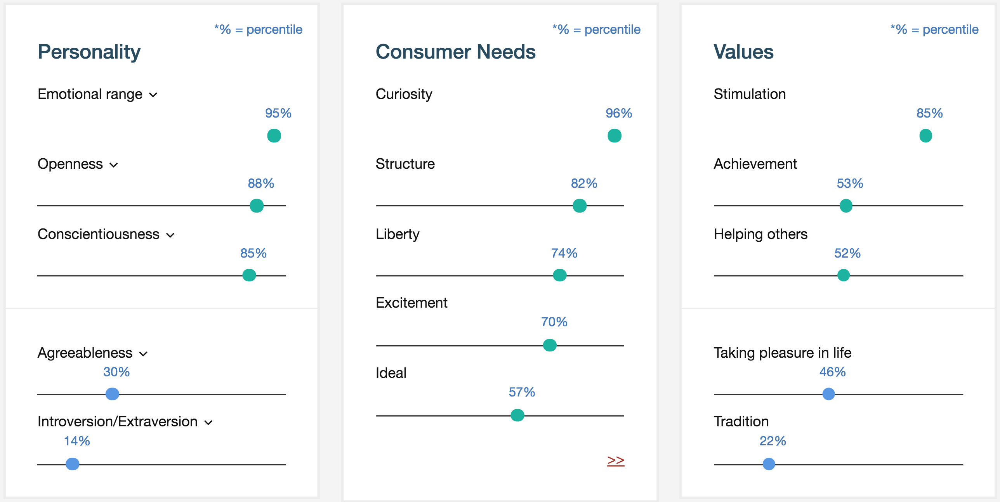

Searching Bentham
Free-text search of Bentham's work.
Search using key phrases, location, correspondent and other identifiers
Mapping Bentham
Bentham's works laid out on a map by locations mentioned in the text and data
Search using key phrases, location, correspondent and other identifiers
Bentham's Ideas
Click on the interactive diagram to search through the main themes of his letters from the UCL Collection

Bentham's Written Network
A network map of Bentham's recipients and their further correspondence from the UCL and British Library Collections
Object Gallery
Explore the physical objects of Bentham

|
In September 1999 the existence of a possible item of Bentham's clothing was brought to our notice—a dressing gown, made out of cotton with a delicate floral pattern in a Japanese style on a pale yellow background, which, according to a tradition within the family who now own it, once belonged to Jeremy Bentham. The garment certainly bears a striking resemblance to the one Bentham wears in the print by Robert Seymour entitled 'Kings College Versus London University', Catalogue entry No 22, pp.44–5. |

|
At the end of the South Cloisters of the main building of UCL stands a wooden cabinet, which has been a source of curiosity and perplexity to visitors. The cabinet contains Bentham's preserved skeleton, dressed in his own clothes, and surmounted by a wax head. Bentham requested that his body be preserved in this way in his will made shortly before his death on 6 June 1832. The cabinet was moved to UCL in 1850. Not surprisingly, this peculiar relic has given rise to numerous legends and anecdotes. One of the most commonly recounted is that the Auto-Icon regularly attends meetings of the College Council, and that it is solemnly wheeled into the Council Room to take its place among the present-day members. Its presence, it is claimed, is always recorded in the minutes with the words Jeremy Bentham - present but not voting. Another version of the story asserts that the Auto-Icon does vote, but only on occasions when the votes of the other Council members are equally split. In these cases the Auto-Icon invariably votes for the motion. Stories of the Auto-Icon's regular attendance at Council meetings are, however, myths. Bentham had originally intended that his head should be part of the Auto-Icon, and for ten years before his death (so runs another story) carried around in his pocket the glass eyes which were to adorn it. Unfortunately when the time came to preserve it for posterity, the process of desiccation, as practiced by New Zealand Maoris, went disastrously wrong, robbing the head of most of its facial expression, and leaving it decidedly unattractive. The wax head was therefore substituted, and for some years the real head, with its glass eyes, reposed on the floor of the Auto-Icon, between Bentham's legs. In 1948 the head was placed inside a specially constructed wooden box to give it more protection. The box was too large to fit inside the Auto-Icon and so it was displayed on top of the case containing the Auto-Icon until 1956, when it was put on a plinth over the door to the Cloisters leading to the eastern staircase. (UCL Archive: Bentham Box File 3). |
Follow Bentham in the Present
View the latest updates from the Transcribe Bentham Project and compare your personality
The below IBM Personality Insights are based on a sample of 33,000 of Jeremy Bentham’s written words. The Sunburst visualisation assessed his personality based on the Big Five Personality Traits, Needs and Values.

According to his Personality Insights, Bentham was excitable, inner-directed and restrained. He was self-controlled: he had control over his desires, which were not particularly intense. He was philosophical: you are open to and intrigued by new ideas and love to explore them. He was solemn: you are generally serious and do not joke much. His choices were driven by a desire for discovery. He considered independence to guide a large part of what he did: he liked to set his own goals to decide how to best achieve them. He was relatively unconcerned with tradition: he cared more about making his own path than following what others had done.
If Bentham were still with us today, he would be likely to like documentary movies, attend live musical events and prefer quality when buying clothes. He would be unlikely to prefer using credit cards for shopping, be influenced by social media during product purchases, and be influenced by family when making product purchases.
How does your personality compare to Bentham’s? Compare your results based on your written word or Twitter account to Bentham’s here: